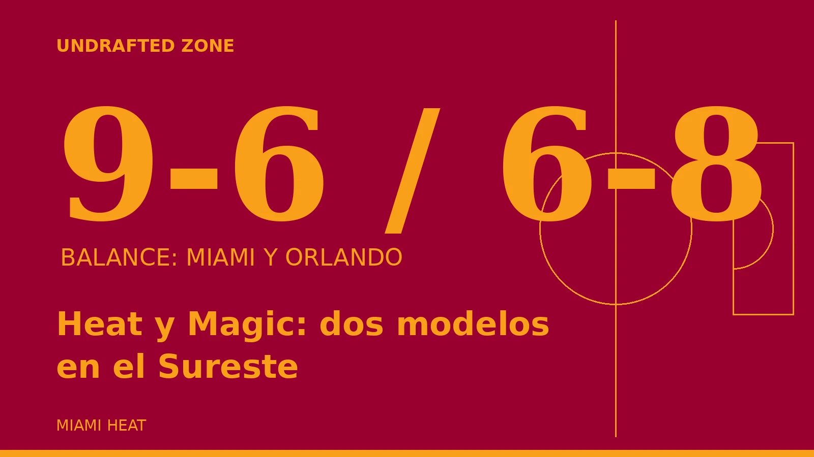

Heat y Magic: dos modelos en el Sureste a mitad de noviembre
Miami gana por ataque y Orlando por defensa. Dos equipos de la misma división, con balances de 9-6 y 6-8, y una pregunta común: el estado de Banchero.

Miami Heat y Orlando Magic comparten división, y a mitad de noviembre parecen dos equipos del mismo sureste que llegan por caminos distintos. Los Heat son 9-6 y cuarto del Este, con tres victorias seguidas. Los Magic son 6-8 y octavos, con una derrota el miércoles ante Philadelphia. Con datos de ESPN y la comprobación de Basketball-Reference, esta pieza no repite la guía de Miami de noviembre. Compara los dos modelos: qué hace cada equipo para ganar, dónde pierde y qué dice eso del resto de la temporada en la división.
Dos balances, dos modelos
La diferencia más clara está en el marcador. Miami anota 120’5 puntos por partido y recibe 119’9, con un saldo de +0’7. Orlando anota 109’4 y recibe 112’8, con un saldo de -3’4. Los Heat ganan a base de ataque y los Magic lo hacen, cuando lo hacen, con una defensa que contiene mejor al rival, pero con un ataque que se queda corto en los partidos cerrados.
Eso se nota en los resultados recientes. Miami ganó a Detroit por 137-117 el 14 de noviembre, a Houston por 128-110 el 16 y a Milwaukee por 137-130 el 18. Son tres victorias con un ataque por encima de 128 puntos. Orlando ganó a Milwaukee por 107-99 el 13, a Boston por 115-105 el 16 y perdió ante Philadelphia por 116-121 el 18. En las dos victorias de la semana, el equipo anotó 107 y 115 puntos, una cifra que no sostiene el balance si el rival se acerca.
El Heat de Giannis
Giannis Antetokounmpo es la referencia de Miami. Empieza los quince partidos, juega 32’1 minutos y promedia 28’2 puntos, 12’6 rebotes y 5’5 asistencias, con un 60’2% en tiros de campo y un 24’2% en triples. Es un jugador que aporta casi todo lo que el equipo necesita en la pintura, y su volumen explica buena parte del 120’5 de anotación del equipo. El origen de su llegada a Miami está en el traspaso de junio.
Bam Adebayo es el complemento natural. Empieza los quince partidos, juega 32’3 minutos y aporta 18’9 puntos y 7’7 rebotes, con un 52’4% en tiros de campo. Su eficiencia en el poste es uno de los datos más sólidos de la rotación. Su tiro exterior, con un 24’5% en triples, sigue siendo la pregunta de la pareja.
Davion Mitchell aporta el control de la pelota. Empieza los quince partidos, juega 35’6 minutos y promedia 17’2 puntos y 9’0 asistencias, con un 43’7% en triples. Es el base que más reparte el juego del equipo. Klay Thompson completa el quinteto con 15’3 puntos y un 43’2% en triples en catorce titularidades, y es el tirador que da espacio a los dos grandes. Sus cifras de esta temporada lo sitúan como una de las piezas de tiro del quinteto. Para entender cómo se llegó a esta plantilla, nuestro repaso del rompecabezas de Giannis y Bam sirve de punto de partida.
El Magic de Franz Wagner
Franz Wagner es el jugador que sostiene a Orlando. Empieza los catorce partidos, juega 36’8 minutos y promedia 24’4 puntos, 6’9 rebotes y 8’5 asistencias, con un 47’0% en tiros de campo y un 25’0% en triples. Es el que más carga con el ataque y el que más reparte la pelota del equipo. Su tiro exterior es el punto más débil de su juego, y en un equipo que anota 109 puntos, cada posesión que termina sin canasta cuesta más.
Desmond Bane es el segundo gran anotador. Empieza los trece partidos, juega 35’2 minutos y aporta 18’5 puntos y 4’3 rebotes, con un 42’6% en tiros de campo y un 41’7% en triples. Su tiro exterior es la mejor arma de Orlando desde la distancia, y en un equipo que necesita espacio para Wagner y Banchero, su porcentaje da al ataque una base sólida.
Anthony Black es la tercera pieza del perímetro. Empieza diez partidos, juega 32’6 minutos y promedia 16’5 puntos y 5’6 asistencias, con un 40’4% en triples. Wendell Carter Jr. aporta 13’4 puntos y 8’8 rebotes en catorce titularidades, con un 56’4% en tiros de campo. Su rebote es uno de los puntos fuertes de Orlando en el poste.
Banchero y las bajas
Paolo Banchero es la pieza que cambia todo el análisis de Orlando. Según las estadísticas consultadas, solo ha jugado dos partidos esta temporada, en los que promedió 24’5 puntos, 6’5 rebotes y 7’5 asistencias, con un 69’6% en tiros de campo. Tuvo un esguince alto de tobillo derecho que le dejó fuera, según el parte citado en la página de lesiones, y su cifra en los dos partidos que ha jugado es la de un jugador que puede sostener al equipo. Su disponibilidad en las próximas semanas va a ser la pregunta más importante para Orlando.
Además, Isaac se perdió el partido ante Boston por una lesión de rodilla, Noah Penda sigue sin fecha de vuelta por una lesión de isquiotibial, y Izaiyah Nelson hace trabajo sobre la pista tras una lesión de tobillo. Es una lista larga para un equipo que ya tiene a su estrella fuera de la rotación. En Miami, el parte de lesiones solo recoge a Myron Gardner, que estuvo fuera el miércoles ante Milwaukee por una lesión de isquiotibial.
Los banquillos
El banquillo de Miami tiene una pieza clara en Pelle Larsson, que empieza tres de sus doce partidos, juega 28’3 minutos y promedia 10’8 puntos con un 47’1% en triples. Su extensión con el club, cerrada en octubre, le da a la rotación un jugador de perímetro con margen de crecimiento. Bobby Portis aporta 7’5 puntos y 5’3 rebotes desde la suplencia, y Ryan Conwell suma 7’2 puntos con un 35’2% en triples en trece partidos. Es una segunda unidad que da al equipo tiros exteriores y rebote, aunque sin un anotador que pueda sostener un parcial largo cuando los titulares descansan.
Orlando tiene en Tristan da Silva el mejor reclamo del banquillo. Juega doce partidos, promedia 14’4 puntos con un 40’2% en triples, y ha sido una de las piezas más útiles de la rotación de ala. Goga Bitadze aporta 5’2 puntos y 3’8 rebotes con un 70’6% en tiros de campo, y Jevon Carter suma 4’5 puntos en diez partidos. Es un banquillo que sostiene la defensa mejor que el ataque, y eso se nota en los minutos en los que los titulares no están.
Los últimos tres partidos
Miami llega con tres victorias seguidas, ante Detroit, Houston y Milwaukee, y la última fue la más difícil: ganó 137-130 a los Bucks, que llegaban con diez derrotas seguidas. Orlando ganó a los Bucks y a los Celtics, y perdió el miércoles ante los 76ers por cinco puntos. Son dos equipos que cerraron la semana con sensaciones distintas.
La diferencia se nota en cómo cierran los partidos. Miami gana cuando el ataque sube el ritmo; Orlando gana cuando el partido se queda en la defensa. Los dos son estilos válidos, pero el de Miami es más estable cuando el partido se abre, y el de Orlando depende de que Wagner y Bane estén en pista en los últimos minutos.
Lo que se juega el Sureste
Miami y Orlando comparten división, y eso significa que cada partido entre ellos tiene más peso en la clasificación que cualquier otro duelo de la conferencia. Con 9-6 y 6-8, la diferencia en el balance no es enorme, pero sí suficiente para que el tramo de diciembre pueda decidir el orden de la división.
Miami tiene que demostrar que el ataque aguanta fuera de casa, mientras que Orlando necesita que Banchero vuelva a su mejor nivel para que el equipo deje de depender de Wagner. Esa es la lectura que más me interesa: no quién es mejor hoy, sino cuál de los dos modelos aguanta mejor cuando el calendario aprieta.
Qué mirar en las próximas semanas
Hay tres preguntas que decidirán la temporada de la división. La primera es si Miami mantiene su ataque por encima de 120 puntos cuando el rival defiende mejor. La segunda es si Orlando recupera a Banchero y en qué estado llega a los partidos de diciembre. La tercera es si el banquillo de Miami puede sostener una ventaja cuando Giannis descansa, porque ahí se decide si el 9-6 es un punto de partida o un techo.
Con quince y catorce partidos, cualquier conclusión sobre la división es provisional. Esta pieza se actualizará cuando cambien las cifras y el estado de las bajas, y el aviso de «Actualizado» indicará la fecha. La comparación, en cualquier caso, ya dice bastante: Miami gana por el ataque y Orlando por la defensa, y la temporada se decidirá en el punto en el que esas dos fórmulas se encuentren.
Preguntas frecuentes
¿Cuál es el balance de Miami y Orlando en 2026-27?
Miami tiene 9 victorias y 6 derrotas, cuarto del Este. Orlando tiene 6 victorias y 8 derrotas, octavo del Este.
¿Quién es el máximo anotador de cada equipo?
Giannis Antetokounmpo, con 28’2 puntos por partido, en Miami. Franz Wagner, con 24’4, en Orlando.
¿Quién reparte más asistencias?
Davion Mitchell, con 9’0 por partido en Miami. Franz Wagner, con 8’5, es el que más reparte en Orlando.
¿Cuándo es el próximo partido?
Según el calendario de ESPN, Orlando juega el sábado 21 en Brooklyn, y Miami el domingo 22 contra Oklahoma City.
¿Por qué no aparecen salarios?
Porque esta pieza se centra en la rotación y el rendimiento, y no hay cifras salariales que se puedan contrastar con la misma solidez que las estadísticas. Para entender cómo encajan los contratos en el tope, nuestra guía sobre el tope salarial, la luxury tax y los aprons es el punto de partida.